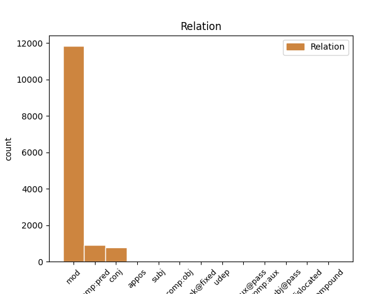
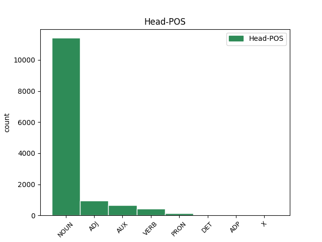
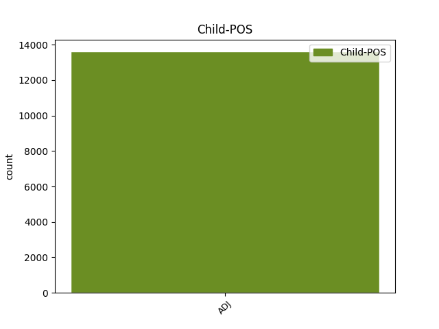

Distribution of features within this leaf



Agreement Rules sorted by frequency.
- When the dependent token is the modifer(mod) of the head token, and the head token is NOUN and the dependent token is ADJ.
1 Questo _ _ _ _ 0 _ _ _
2 Premio _ _ _ _ 0 _ _ _
3 che _ _ _ _ 0 _ _ _
4 non _ _ _ _ 0 _ _ _
5 avrà _ _ _ _ 0 _ _ _
6 sede sede NOUN S Gender=Fem|Number=Sing 0 _ _ _
7 fissa fisso ADJ A Gender=Fem|Number=Sing 6 mod _ _
8 né _ _ _ _ 0 _ _ _
9 statuto _ _ _ _ 0 _ _ _
10 né _ _ _ _ 0 _ _ _
11 bando _ _ _ _ 0 _ _ _
12 di _ _ _ _ 0 _ _ _
13 concorso _ _ _ _ 0 _ _ _
14 sarà _ _ _ _ 0 _ _ _
15 dotato _ _ _ _ 0 _ _ _
16 di _ _ _ _ 0 _ _ _
17 una _ _ _ _ 0 _ _ _
18 somma _ _ _ _ 0 _ _ _
19 di _ _ _ _ 0 _ _ _
20 denaro _ _ _ _ 0 _ _ _
21 con _ _ _ _ 0 _ _ _
22 la _ _ _ _ 0 _ _ _
23 quale _ _ _ _ 0 _ _ _
24 un _ _ _ _ 0 _ _ _
25 gruppo _ _ _ _ 0 _ _ _
26 di _ _ _ _ 0 _ _ _
27 amici _ _ _ _ 0 _ _ _
28 accoglierà _ _ _ _ 0 _ _ _
29 un' _ _ _ _ 0 _ _ _
30 opera _ _ _ _ 0 _ _ _
31 o _ _ _ _ 0 _ _ _
32 un _ _ _ _ 0 _ _ _
33 gesto _ _ _ _ 0 _ _ _
34 o _ _ _ _ 0 _ _ _
35 un _ _ _ _ 0 _ _ _
36 evento _ _ _ _ 0 _ _ _
37 di _ _ _ _ 0 _ _ _
38 cultura _ _ _ _ 0 _ _ _
39 che _ _ _ _ 0 _ _ _
40 Elsa _ _ _ _ 0 _ _ _
41 Morante _ _ _ _ 0 _ _ _
42 avrebbe _ _ _ _ 0 _ _ _
43 apprezzato _ _ _ _ 0 _ _ _
44 . _ _ _ _ 0 _ _ _
1 La _ _ _ _ 0 _ _ _
2 Authority _ _ _ _ 0 _ _ _
3 per _ _ _ _ 0 _ _ _
4 Berlino _ _ _ _ 0 _ _ _
5 spera _ _ _ _ 0 _ _ _
6 molto _ _ _ _ 0 _ _ _
7 in _ _ _ _ 0 _ _ _
8 investimenti _ _ _ _ 0 _ _ _
9 per _ _ _ _ 0 _ _ _
10 spettacolo _ _ _ _ 0 _ _ _
11 e _ _ _ _ 0 _ _ _
12 cultura _ _ _ _ 0 _ _ _
13 , _ _ _ _ 0 _ _ _
14 e _ _ _ _ 0 _ _ _
15 non _ _ _ _ 0 _ _ _
16 disdegna _ _ _ _ 0 _ _ _
17 di _ _ _ _ 0 _ _ _
18 veder _ _ _ _ 0 _ _ _
19 sfilare _ _ _ _ 0 _ _ _
20 qui _ _ _ _ 0 _ _ _
21 gli _ _ _ _ 0 _ _ _
22 enormi enorme ADJ A Number=Plur 0 _ _ _
23 , _ _ _ _ 0 _ _ _
24 colorati colorato ADJ A Gender=Masc|Number=Plur 22 conj _ _
25 cortei _ _ _ _ 0 _ _ _
26 di _ _ _ _ 0 _ _ _
27 Ravers _ _ _ _ 0 _ _ _
28 che _ _ _ _ 0 _ _ _
29 già _ _ _ _ 0 _ _ _
30 oggi _ _ _ _ 0 _ _ _
31 percorrono _ _ _ _ 0 _ _ _
32 pacifici _ _ _ _ 0 _ _ _
33 la _ _ _ _ 0 _ _ _
34 città _ _ _ _ 0 _ _ _
35 a _ _ _ _ 0 _ _ _
36 il _ _ _ _ 0 _ _ _
37 ritmo _ _ _ _ 0 _ _ _
38 Techno _ _ _ _ 0 _ _ _
39 . _ _ _ _ 0 _ _ _
1 " _ _ _ _ 0 _ _ _
2 le _ _ _ _ 0 _ _ _
3 acque _ _ _ _ 0 _ _ _
4 territoriali _ _ _ _ 0 _ _ _
5 di _ _ _ _ 0 _ _ _
6 Tahiti _ _ _ _ 0 _ _ _
7 sono essere AUX VA Mood=Ind|Number=Plur|Person=3|Tense=Pres|VerbForm=Fin 0 _ _ _
8 aperte aperto ADJ A Gender=Fem|Number=Plur 7 comp:pred _ _
9 a _ _ _ _ 0 _ _ _
10 la _ _ _ _ 0 _ _ _
11 navigazione _ _ _ _ 0 _ _ _
12 di _ _ _ _ 0 _ _ _
13 tutte _ _ _ _ 0 _ _ _
14 le _ _ _ _ 0 _ _ _
15 navi _ _ _ _ 0 _ _ _
16 francesi _ _ _ _ 0 _ _ _
17 e _ _ _ _ 0 _ _ _
18 straniere _ _ _ _ 0 _ _ _
19 " _ _ _ _ 0 _ _ _
20 , _ _ _ _ 0 _ _ _
21 ha _ _ _ _ 0 _ _ _
22 annunciato _ _ _ _ 0 _ _ _
23 l' _ _ _ _ 0 _ _ _
24 alto _ _ _ _ 0 _ _ _
25 commissariato _ _ _ _ 0 _ _ _
26 di _ _ _ _ 0 _ _ _
27 Papeete _ _ _ _ 0 _ _ _
28 . _ _ _ _ 0 _ _ _
1 Sì _ _ _ _ 0 _ _ _
2 , _ _ _ _ 0 _ _ _
3 è _ _ _ _ 0 _ _ _
4 proprio _ _ _ _ 0 _ _ _
5 lei _ _ _ _ 0 _ _ _
6 , _ _ _ _ 0 _ _ _
7 la _ _ _ _ 0 _ _ _
8 Alexanderplatz _ _ _ _ 0 _ _ _
9 che _ _ _ _ 0 _ _ _
10 Doblin _ _ _ _ 0 _ _ _
11 rese rendere VERB V Mood=Ind|Number=Sing|Person=3|Tense=Past|VerbForm=Fin 0 _ _ _
12 famosa famoso ADJ A Gender=Fem|Number=Sing 11 comp:pred _ _
13 in _ _ _ _ 0 _ _ _
14 le _ _ _ _ 0 _ _ _
15 sue _ _ _ _ 0 _ _ _
16 pagine _ _ _ _ 0 _ _ _
17 , _ _ _ _ 0 _ _ _
18 dedicate _ _ _ _ 0 _ _ _
19 a _ _ _ _ 0 _ _ _
20 la _ _ _ _ 0 _ _ _
21 piccola _ _ _ _ 0 _ _ _
22 gente _ _ _ _ 0 _ _ _
23 come _ _ _ _ 0 _ _ _
24 " _ _ _ _ 0 _ _ _
25 les _ _ _ _ 0 _ _ _
26 enfants _ _ _ _ 0 _ _ _
27 du _ _ _ _ 0 _ _ _
28 paradis _ _ _ _ 0 _ _ _
29 " _ _ _ _ 0 _ _ _
30 di _ _ _ _ 0 _ _ _
31 Carné _ _ _ _ 0 _ _ _
32 , _ _ _ _ 0 _ _ _
33 la _ _ _ _ 0 _ _ _
34 Alexanderplatz _ _ _ _ 0 _ _ _
35 dove _ _ _ _ 0 _ _ _
36 i _ _ _ _ 0 _ _ _
37 cortei _ _ _ _ 0 _ _ _
38 di _ _ _ _ 0 _ _ _
39 l' _ _ _ _ 0 _ _ _
40 89 _ _ _ _ 0 _ _ _
41 segnarono _ _ _ _ 0 _ _ _
42 la _ _ _ _ 0 _ _ _
43 caduta _ _ _ _ 0 _ _ _
44 di _ _ _ _ 0 _ _ _
45 i _ _ _ _ 0 _ _ _
46 successori _ _ _ _ 0 _ _ _
47 di _ _ _ _ 0 _ _ _
48 Honecker _ _ _ _ 0 _ _ _
49 . _ _ _ _ 0 _ _ _
1 D' _ _ _ _ 0 _ _ _
2 Alema _ _ _ _ 0 _ _ _
3 ha _ _ _ _ 0 _ _ _
4 però _ _ _ _ 0 _ _ _
5 sottolineato _ _ _ _ 0 _ _ _
6 di _ _ _ _ 0 _ _ _
7 non _ _ _ _ 0 _ _ _
8 avere _ _ _ _ 0 _ _ _
9 " _ _ _ _ 0 _ _ _
10 la _ _ _ _ 0 _ _ _
11 possibilità _ _ _ _ 0 _ _ _
12 di _ _ _ _ 0 _ _ _
13 dire _ _ _ _ 0 _ _ _
14 se _ _ _ _ 0 _ _ _
15 le _ _ _ _ 0 _ _ _
16 condizioni _ _ _ _ 0 _ _ _
17 per _ _ _ _ 0 _ _ _
18 un _ _ _ _ 0 _ _ _
19 intervento _ _ _ _ 0 _ _ _
20 militare militare ADJ A Number=Sing 0 _ _ _
21 utile utile ADJ A Number=Sing 20 mod _ _
22 esistono _ _ _ _ 0 _ _ _
23 : _ _ _ _ 0 _ _ _
24 è _ _ _ _ 0 _ _ _
25 l' _ _ _ _ 0 _ _ _
26 Onu _ _ _ _ 0 _ _ _
27 , _ _ _ _ 0 _ _ _
28 che _ _ _ _ 0 _ _ _
29 deve _ _ _ _ 0 _ _ _
30 dir _ _ _ _ 0 _ _ _
31 ci _ _ _ _ 0 _ _ _
32 se _ _ _ _ 0 _ _ _
33 queste _ _ _ _ 0 _ _ _
34 condizioni _ _ _ _ 0 _ _ _
35 esistono _ _ _ _ 0 _ _ _
36 " _ _ _ _ 0 _ _ _
37 . _ _ _ _ 0 _ _ _
1 Infine _ _ _ _ 0 _ _ _
2 la _ _ _ _ 0 _ _ _
3 Telecom _ _ _ _ 0 _ _ _
4 : _ _ _ _ 0 _ _ _
5 " _ _ _ _ 0 _ _ _
6 bisogna _ _ _ _ 0 _ _ _
7 batter _ _ _ _ 0 _ _ _
8 si _ _ _ _ 0 _ _ _
9 affinché _ _ _ _ 0 _ _ _
10 non _ _ _ _ 0 _ _ _
11 passi _ _ _ _ 0 _ _ _
12 la _ _ _ _ 0 _ _ _
13 linea _ _ _ _ 0 _ _ _
14 di _ _ _ _ 0 _ _ _
15 un _ _ _ _ 0 _ _ _
16 aumento _ _ _ _ 0 _ _ _
17 di _ _ _ _ 0 _ _ _
18 le _ _ _ _ 0 _ _ _
19 tariffe _ _ _ _ 0 _ _ _
20 domestiche _ _ _ _ 0 _ _ _
21 , _ _ _ _ 0 _ _ _
22 dove _ _ _ _ 0 _ _ _
23 già _ _ _ _ 0 _ _ _
24 Telecom _ _ _ _ 0 _ _ _
25 guadagna _ _ _ _ 0 _ _ _
26 abbondantemente _ _ _ _ 0 _ _ _
27 , _ _ _ _ 0 _ _ _
28 e _ _ _ _ 0 _ _ _
29 una _ _ _ _ 0 _ _ _
30 riduzione _ _ _ _ 0 _ _ _
31 di _ _ _ _ 0 _ _ _
32 quelle quello PRON PD Gender=Fem|Number=Plur|PronType=Dem 0 _ _ _
33 internazionali internazionale ADJ A Number=Plur 32 mod _ SpaceAfter=No
34 " _ _ _ _ 0 _ _ _
35 . _ _ _ _ 0 _ _ _
1 La _ _ _ _ 0 _ _ _
2 Authority _ _ _ _ 0 _ _ _
3 per _ _ _ _ 0 _ _ _
4 Berlino _ _ _ _ 0 _ _ _
5 spera _ _ _ _ 0 _ _ _
6 molto _ _ _ _ 0 _ _ _
7 in _ _ _ _ 0 _ _ _
8 investimenti _ _ _ _ 0 _ _ _
9 per _ _ _ _ 0 _ _ _
10 spettacolo _ _ _ _ 0 _ _ _
11 e _ _ _ _ 0 _ _ _
12 cultura _ _ _ _ 0 _ _ _
13 , _ _ _ _ 0 _ _ _
14 e _ _ _ _ 0 _ _ _
15 non _ _ _ _ 0 _ _ _
16 disdegna _ _ _ _ 0 _ _ _
17 di _ _ _ _ 0 _ _ _
18 veder _ _ _ _ 0 _ _ _
19 sfilare _ _ _ _ 0 _ _ _
20 qui _ _ _ _ 0 _ _ _
21 gli _ _ _ _ 0 _ _ _
22 enormi _ _ _ _ 0 _ _ _
23 , _ _ _ _ 0 _ _ _
24 colorati _ _ _ _ 0 _ _ _
25 cortei _ _ _ _ 0 _ _ _
26 di _ _ _ _ 0 _ _ _
27 Ravers _ _ _ _ 0 _ _ _
28 che _ _ _ _ 0 _ _ _
29 già _ _ _ _ 0 _ _ _
30 oggi _ _ _ _ 0 _ _ _
31 percorrono percorrere VERB V Mood=Ind|Number=Plur|Person=3|Tense=Pres|VerbForm=Fin 0 _ _ _
32 pacifici pacifico ADJ A Gender=Masc|Number=Plur 31 mod _ _
33 la _ _ _ _ 0 _ _ _
34 città _ _ _ _ 0 _ _ _
35 a _ _ _ _ 0 _ _ _
36 il _ _ _ _ 0 _ _ _
37 ritmo _ _ _ _ 0 _ _ _
38 Techno _ _ _ _ 0 _ _ _
39 . _ _ _ _ 0 _ _ _
1 Di _ _ _ _ 0 _ _ _
2 Pietro _ _ _ _ 0 _ _ _
3 , _ _ _ _ 0 _ _ _
4 sconcertato _ _ _ _ 0 _ _ _
5 , _ _ _ _ 0 _ _ _
6 amareggiato amareggiare VERB V Gender=Masc|Number=Sing|Tense=Past|VerbForm=Part 0 _ _ _
7 , _ _ _ _ 0 _ _ _
8 ma _ _ _ _ 0 _ _ _
9 non _ _ _ _ 0 _ _ _
10 spaventato spaventato ADJ A Gender=Masc|Number=Sing 6 conj _ SpaceAfter=No
11 , _ _ _ _ 0 _ _ _
12 si _ _ _ _ 0 _ _ _
13 era _ _ _ _ 0 _ _ _
14 sfogato _ _ _ _ 0 _ _ _
15 con _ _ _ _ 0 _ _ _
16 il _ _ _ _ 0 _ _ _
17 collega _ _ _ _ 0 _ _ _
18 , _ _ _ _ 0 _ _ _
19 in _ _ _ _ 0 _ _ _
20 amicizia _ _ _ _ 0 _ _ _
21 , _ _ _ _ 0 _ _ _
22 affidandogli _ _ _ _ 0 _ _ _
23 gli _ _ _ _ 0 _ _ _
24 una _ _ _ _ 0 _ _ _
25 confidenza _ _ _ _ 0 _ _ _
26 molto _ _ _ _ 0 _ _ _
27 personale _ _ _ _ 0 _ _ _
28 di _ _ _ _ 0 _ _ _
29 fronte _ _ _ _ 0 _ _ _
30 a _ _ _ _ 0 _ _ _
31 l' _ _ _ _ 0 _ _ _
32 ultima _ _ _ _ 0 _ _ _
33 " _ _ _ _ 0 _ _ _
34 aggressione _ _ _ _ 0 _ _ _
35 " _ _ _ _ 0 _ _ _
36 . _ _ _ _ 0 _ _ _
1 La _ _ _ _ 0 _ _ _
2 vera _ _ _ _ 0 _ _ _
3 rivoluzione _ _ _ _ 0 _ _ _
4 di _ _ _ _ 0 _ _ _
5 la _ _ _ _ 0 _ _ _
6 riforma _ _ _ _ 0 _ _ _
7 sta _ _ _ _ 0 _ _ _
8 in _ _ _ _ 0 _ _ _
9 una _ _ _ _ 0 _ _ _
10 parola parola NOUN S Gender=Fem|Number=Sing 0 _ _ _
11 : _ _ _ _ 0 _ _ _
12 contributivo contributivo ADJ A Gender=Masc|Number=Sing 10 appos _ SpaceAfter=No
13 . _ _ _ _ 0 _ _ _
1 È _ _ _ _ 0 _ _ _
2 sempre _ _ _ _ 0 _ _ _
3 stato _ _ _ _ 0 _ _ _
4 così _ _ _ _ 0 _ _ _
5 , _ _ _ _ 0 _ _ _
6 i _ _ _ _ 0 _ _ _
7 grandi grande ADJ A Number=Plur 8 subj _ _
8 hanno avere AUX VA Mood=Ind|Number=Plur|Person=3|Tense=Pres|VerbForm=Fin 0 _ _ _
9 istradato _ _ _ _ 0 _ _ _
10 i _ _ _ _ 0 _ _ _
11 loro _ _ _ _ 0 _ _ _
12 allievi _ _ _ _ 0 _ _ _
13 che _ _ _ _ 0 _ _ _
14 , _ _ _ _ 0 _ _ _
15 diventati _ _ _ _ 0 _ _ _
16 grandi _ _ _ _ 0 _ _ _
17 a _ _ _ _ 0 _ _ _
18 loro _ _ _ _ 0 _ _ _
19 volta _ _ _ _ 0 _ _ _
20 , _ _ _ _ 0 _ _ _
21 hanno _ _ _ _ 0 _ _ _
22 selezionato _ _ _ _ 0 _ _ _
23 i _ _ _ _ 0 _ _ _
24 migliori _ _ _ _ 0 _ _ _
25 tra _ _ _ _ 0 _ _ _
26 i _ _ _ _ 0 _ _ _
27 propri _ _ _ _ 0 _ _ _
28 discepoli _ _ _ _ 0 _ _ _
29 . _ _ _ _ 0 _ _ _
1 Camminano _ _ _ _ 0 _ _ _
2 lentamente _ _ _ _ 0 _ _ _
3 , _ _ _ _ 0 _ _ _
4 qualcuno _ _ _ _ 0 _ _ _
5 si _ _ _ _ 0 _ _ _
6 trascina _ _ _ _ 0 _ _ _
7 dietro _ _ _ _ 0 _ _ _
8 un _ _ _ _ 0 _ _ _
9 asino _ _ _ _ 0 _ _ _
10 o _ _ _ _ 0 _ _ _
11 una _ _ _ _ 0 _ _ _
12 mucca _ _ _ _ 0 _ _ _
13 , _ _ _ _ 0 _ _ _
14 i _ _ _ _ 0 _ _ _
15 più _ _ _ _ 0 _ _ _
16 deboli debole ADJ A Number=Plur 20 subj _ _
17 o _ _ _ _ 0 _ _ _
18 i _ _ _ _ 0 _ _ _
19 feriti _ _ _ _ 0 _ _ _
20 giacciono giacere VERB V Mood=Ind|Number=Plur|Person=3|Tense=Pres|VerbForm=Fin 0 _ _ _
21 su _ _ _ _ 0 _ _ _
22 una _ _ _ _ 0 _ _ _
23 barella _ _ _ _ 0 _ _ _
24 improvvisata _ _ _ _ 0 _ _ _
25 , _ _ _ _ 0 _ _ _
26 ma _ _ _ _ 0 _ _ _
27 non _ _ _ _ 0 _ _ _
28 c' _ _ _ _ 0 _ _ _
29 è _ _ _ _ 0 _ _ _
30 fretta _ _ _ _ 0 _ _ _
31 per _ _ _ _ 0 _ _ _
32 arrivare _ _ _ _ 0 _ _ _
33 in _ _ _ _ 0 _ _ _
34 un _ _ _ _ 0 _ _ _
35 posto _ _ _ _ 0 _ _ _
36 che _ _ _ _ 0 _ _ _
37 ancora _ _ _ _ 0 _ _ _
38 una _ _ _ _ 0 _ _ _
39 volta _ _ _ _ 0 _ _ _
40 sarà _ _ _ _ 0 _ _ _
41 solo _ _ _ _ 0 _ _ _
42 una _ _ _ _ 0 _ _ _
43 nuova _ _ _ _ 0 _ _ _
44 tappa _ _ _ _ 0 _ _ _
45 di _ _ _ _ 0 _ _ _
46 tante _ _ _ _ 0 _ _ _
47 altre _ _ _ _ 0 _ _ _
48 fughe _ _ _ _ 0 _ _ _
49 . _ _ _ _ 0 _ _ _
1 ad _ _ _ _ 0 _ _ _
2 esempio _ _ _ _ 0 _ _ _
3 , _ _ _ _ 0 _ _ _
4 i _ _ _ _ 0 _ _ _
5 circa _ _ _ _ 0 _ _ _
6 800 _ _ _ _ 0 _ _ _
7 mila _ _ _ _ 0 _ _ _
8 volontari _ _ _ _ 0 _ _ _
9 impegnati _ _ _ _ 0 _ _ _
10 in _ _ _ _ 0 _ _ _
11 la _ _ _ _ 0 _ _ _
12 solidarietà _ _ _ _ 0 _ _ _
13 ( _ _ _ _ 0 _ _ _
14 anziani anziano NOUN S Gender=Masc|Number=Plur 0 _ _ _
15 soli _ _ _ _ 0 _ _ _
16 , _ _ _ _ 0 _ _ _
17 tossicodipendenti tossicodipendente ADJ A Number=Plur 14 conj _ SpaceAfter=No
18 , _ _ _ _ 0 _ _ _
19 barboni _ _ _ _ 0 _ _ _
20 , _ _ _ _ 0 _ _ _
21 immigrati _ _ _ _ 0 _ _ _
22 ) _ _ _ _ 0 _ _ _
23 , _ _ _ _ 0 _ _ _
24 secondo _ _ _ _ 0 _ _ _
25 la _ _ _ _ 0 _ _ _
26 Fivol _ _ _ _ 0 _ _ _
27 ogni _ _ _ _ 0 _ _ _
28 anno _ _ _ _ 0 _ _ _
29 fanno _ _ _ _ 0 _ _ _
30 risparmiare _ _ _ _ 0 _ _ _
31 a _ _ _ _ 0 _ _ _
32 lo _ _ _ _ 0 _ _ _
33 stato _ _ _ _ 0 _ _ _
34 circa _ _ _ _ 0 _ _ _
35 2.600 _ _ _ _ 0 _ _ _
36 miliardi _ _ _ _ 0 _ _ _
37 . _ _ _ _ 0 _ _ _
1 Poco _ _ _ _ 0 _ _ _
2 nuvoloso _ _ _ _ 0 _ _ _
3 , _ _ _ _ 0 _ _ _
4 variabile _ _ _ _ 0 _ _ _
5 in _ _ _ _ 0 _ _ _
6 Russia _ _ _ _ 0 _ _ _
7 , _ _ _ _ 0 _ _ _
8 Polonia _ _ _ _ 0 _ _ _
9 , _ _ _ _ 0 _ _ _
10 repubblica repubblica NOUN S Gender=Fem|Number=Sing 0 _ _ _
11 ceka ceko ADJ A Gender=Fem|Number=Sing 10 unk@fixed _ _
12 e _ _ _ _ 0 _ _ _
13 slovacca _ _ _ _ 0 _ _ _
14 , _ _ _ _ 0 _ _ _
15 Ungheria _ _ _ _ 0 _ _ _
16 . _ _ _ _ 0 _ _ _
1 La _ _ _ _ 0 _ _ _
2 Guardia _ _ _ _ 0 _ _ _
3 Di _ _ _ _ 0 _ _ _
4 Finanza _ _ _ _ 0 _ _ _
5 arresta arrestare VERB V Mood=Ind|Number=Sing|Person=3|Tense=Pres|VerbForm=Fin 0 _ _ _
6 il _ _ _ _ 0 _ _ _
7 pubblicitario pubblicitario ADJ A Gender=Masc|Number=Sing 5 comp:obj _ _
8 italiano _ _ _ _ 0 _ _ _
9 specializzato _ _ _ _ 0 _ _ _
10 in _ _ _ _ 0 _ _ _
11 le _ _ _ _ 0 _ _ _
12 false _ _ _ _ 0 _ _ _
13 fatture _ _ _ _ 0 _ _ _
14 , _ _ _ _ 0 _ _ _
15 truffe _ _ _ _ 0 _ _ _
16 . _ _ _ _ 0 _ _ _
1 L' _ _ _ _ 0 _ _ _
2 ultima _ _ _ _ 0 _ _ _
3 volta _ _ _ _ 0 _ _ _
4 fu _ _ _ _ 0 _ _ _
5 , _ _ _ _ 0 _ _ _
6 appunto _ _ _ _ 0 _ _ _
7 , _ _ _ _ 0 _ _ _
8 36 _ _ _ _ 0 _ _ _
9 anni _ _ _ _ 0 _ _ _
10 fa _ _ _ _ 0 _ _ _
11 , _ _ _ _ 0 _ _ _
12 quando _ _ _ _ 0 _ _ _
13 sterrando _ _ _ _ 0 _ _ _
14 una _ _ _ _ 0 _ _ _
15 via _ _ _ _ 0 _ _ _
16 di _ _ _ _ 0 _ _ _
17 il _ _ _ _ 0 _ _ _
18 Pireo _ _ _ _ 0 _ _ _
19 ricomparvero _ _ _ _ 0 _ _ _
20 cinque _ _ _ _ 0 _ _ _
21 bronzi _ _ _ _ 0 _ _ _
22 , _ _ _ _ 0 _ _ _
23 uno uno DET DI Gender=Masc|Number=Sing|PronType=Ind 0 _ _ _
24 più _ _ _ _ 0 _ _ _
25 bello bello ADJ A Number=Sing 23 mod _ _
26 di _ _ _ _ 0 _ _ _
27 l' _ _ _ _ 0 _ _ _
28 altro _ _ _ _ 0 _ _ _
29 . _ _ _ _ 0 _ _ _
1 Sono _ _ _ _ 0 _ _ _
2 convinto _ _ _ _ 0 _ _ _
3 ( _ _ _ _ 0 _ _ _
4 e _ _ _ _ 0 _ _ _
5 sono _ _ _ _ 0 _ _ _
6 soprattutto _ _ _ _ 0 _ _ _
7 intenzionato _ _ _ _ 0 _ _ _
8 seriosamente _ _ _ _ 0 _ _ _
9 in _ _ _ _ 0 _ _ _
10 tal _ _ _ _ 0 _ _ _
11 senso _ _ _ _ 0 _ _ _
12 ) _ _ _ _ 0 _ _ _
13 - _ _ _ _ 0 _ _ _
14 scriveva _ _ _ _ 0 _ _ _
15 Almirante _ _ _ _ 0 _ _ _
16 - _ _ _ _ 0 _ _ _
17 che _ _ _ _ 0 _ _ _
18 in _ _ _ _ 0 _ _ _
19 il _ _ _ _ 0 _ _ _
20 1984 _ _ _ _ 0 _ _ _
21 i _ _ _ _ 0 _ _ _
22 pulitissimi _ _ _ _ 0 _ _ _
23 rapporti _ _ _ _ 0 _ _ _
24 politici politico ADJ A Gender=Masc|Number=Plur 0 _ _ _
25 ( _ _ _ _ 0 _ _ _
26 e _ _ _ _ 0 _ _ _
27 umani umano ADJ A Gender=Masc|Number=Plur 24 appos _ SpaceAfter=No
28 ) _ _ _ _ 0 _ _ _
29 da _ _ _ _ 0 _ _ _
30 te _ _ _ _ 0 _ _ _
31 instaurati _ _ _ _ 0 _ _ _
32 in _ _ _ _ 0 _ _ _
33 i _ _ _ _ 0 _ _ _
34 miei _ _ _ _ 0 _ _ _
35 confronti _ _ _ _ 0 _ _ _
36 si _ _ _ _ 0 _ _ _
37 arricchiranno _ _ _ _ 0 _ _ _
38 , _ _ _ _ 0 _ _ _
39 in _ _ _ _ 0 _ _ _
40 modo _ _ _ _ 0 _ _ _
41 discreto _ _ _ _ 0 _ _ _
42 e _ _ _ _ 0 _ _ _
43 corretto _ _ _ _ 0 _ _ _
44 , _ _ _ _ 0 _ _ _
45 di _ _ _ _ 0 _ _ _
46 nuovi _ _ _ _ 0 _ _ _
47 significativi _ _ _ _ 0 _ _ _
48 episodi _ _ _ _ 0 _ _ _
49 " _ _ _ _ 0 _ _ _
50 . _ _ _ _ 0 _ _ _
1 Come _ _ _ _ 0 _ _ _
2 lo _ _ _ _ 0 _ _ _
3 scorso _ _ _ _ 0 _ _ _
4 anno _ _ _ _ 0 _ _ _
5 , _ _ _ _ 0 _ _ _
6 l' _ _ _ _ 0 _ _ _
7 ozono _ _ _ _ 0 _ _ _
8 ha _ _ _ _ 0 _ _ _
9 raggiunto _ _ _ _ 0 _ _ _
10 il _ _ _ _ 0 _ _ _
11 livello _ _ _ _ 0 _ _ _
12 di _ _ _ _ 0 _ _ _
13 attenzione _ _ _ _ 0 _ _ _
14 : _ _ _ _ 0 _ _ _
15 206 _ _ _ _ 0 _ _ _
16 microgrammi _ _ _ _ 0 _ _ _
17 per _ _ _ _ 0 _ _ _
18 metro _ _ _ _ 0 _ _ _
19 cubo _ _ _ _ 0 _ _ _
20 d' _ _ _ _ 0 _ _ _
21 aria _ _ _ _ 0 _ _ _
22 in _ _ _ _ 0 _ _ _
23 Piazza _ _ _ _ 0 _ _ _
24 Fermi _ _ _ _ 0 _ _ _
25 , _ _ _ _ 0 _ _ _
26 sei _ _ _ _ 0 _ _ _
27 a _ _ _ _ 0 _ _ _
28 il _ _ _ _ 0 _ _ _
29 di _ _ _ _ 0 _ _ _
30 sopra _ _ _ _ 0 _ _ _
31 di _ _ _ _ 0 _ _ _
32 il _ _ _ _ 0 _ _ _
33 l' il ADP EA Gender=Masc|Number=Sing 0 _ _ _
34 consentito consentito ADJ A Gender=Masc|Number=Sing 33 comp:obj _ SpaceAfter=No
35 . _ _ _ _ 0 _ _ _
1 Su _ _ _ _ 0 _ _ _
2 il _ _ _ _ 0 _ _ _
3 fronte _ _ _ _ 0 _ _ _
4 di _ _ _ _ 0 _ _ _
5 l' _ _ _ _ 0 _ _ _
6 occupazione _ _ _ _ 0 _ _ _
7 , _ _ _ _ 0 _ _ _
8 il _ _ _ _ 0 _ _ _
9 governo _ _ _ _ 0 _ _ _
10 britannico _ _ _ _ 0 _ _ _
11 ha _ _ _ _ 0 _ _ _
12 messo _ _ _ _ 0 _ _ _
13 in _ _ _ _ 0 _ _ _
14 chiaro _ _ _ _ 0 _ _ _
15 il _ _ _ _ 0 _ _ _
16 proprio _ _ _ _ 0 _ _ _
17 impegno _ _ _ _ 0 _ _ _
18 a _ _ _ _ 0 _ _ _
19 < _ _ _ _ 0 _ _ _
20 liberare _ _ _ _ 0 _ _ _
21 le _ _ _ _ 0 _ _ _
22 imprese _ _ _ _ 0 _ _ _
23 da _ _ _ _ 0 _ _ _
24 oneri _ _ _ _ 0 _ _ _
25 immotivati _ _ _ _ 0 _ _ _
26 > _ _ _ _ 0 _ _ _
27 e _ _ _ _ 0 _ _ _
28 a _ _ _ _ 0 _ _ _
29 oppor _ _ _ _ 0 _ _ _
30 si _ _ _ _ 0 _ _ _
31 a _ _ _ _ 0 _ _ _
32 l' _ _ _ _ 0 _ _ _
33 introduzione _ _ _ _ 0 _ _ _
34 ( _ _ _ _ 0 _ _ _
35 sottintendendo _ _ _ _ 0 _ _ _
36 da _ _ _ _ 0 _ _ _
37 Bruxelles _ _ _ _ 0 _ _ _
38 ) _ _ _ _ 0 _ _ _
39 di _ _ _ _ 0 _ _ _
40 misure _ _ _ _ 0 _ _ _
41 considerate _ _ _ _ 0 _ _ _
42 inutili _ _ _ _ 0 _ _ _
43 , _ _ _ _ 0 _ _ _
44 promettendo _ _ _ _ 0 _ _ _
45 comunque _ _ _ _ 0 _ _ _
46 l' _ _ _ _ 0 _ _ _
47 abolizione _ _ _ _ 0 _ _ _
48 di _ _ _ _ 0 _ _ _
49 centinaia _ _ _ _ 0 _ _ _
50 di _ _ _ _ 0 _ _ _
51 regolamenti _ _ _ _ 0 _ _ _
52 ritenuti ritenere VERB V Gender=Masc|Number=Plur|Tense=Past|VerbForm=Part 0 _ _ _
53 superflui superfluo ADJ A Gender=Masc|Number=Plur 52 udep _ _
54 ( _ _ _ _ 0 _ _ _
55 finora _ _ _ _ 0 _ _ _
56 ne _ _ _ _ 0 _ _ _
57 sono _ _ _ _ 0 _ _ _
58 stati _ _ _ _ 0 _ _ _
59 individuati _ _ _ _ 0 _ _ _
60 circa _ _ _ _ 0 _ _ _
61 500 _ _ _ _ 0 _ _ _
62 ) _ _ _ _ 0 _ _ _
63 compresi _ _ _ _ 0 _ _ _
64 quelli _ _ _ _ 0 _ _ _
65 in _ _ _ _ 0 _ _ _
66 il _ _ _ _ 0 _ _ _
67 settore _ _ _ _ 0 _ _ _
68 di _ _ _ _ 0 _ _ _
69 la _ _ _ _ 0 _ _ _
70 sanità _ _ _ _ 0 _ _ _
71 e _ _ _ _ 0 _ _ _
72 sicurezza _ _ _ _ 0 _ _ _
73 su _ _ _ _ 0 _ _ _
74 il _ _ _ _ 0 _ _ _
75 lavoro _ _ _ _ 0 _ _ _
76 . _ _ _ _ 0 _ _ _
1 L' _ _ _ _ 0 _ _ _
2 altro _ _ _ _ 0 _ _ _
3 50 _ _ _ _ 0 _ _ _
4 per _ _ _ _ 0 _ _ _
5 cento _ _ _ _ 0 _ _ _
6 sarebbe _ _ _ _ 0 _ _ _
7 stato _ _ _ _ 0 _ _ _
8 suddiviso _ _ _ _ 0 _ _ _
9 in _ _ _ _ 0 _ _ _
10 seguito _ _ _ _ 0 _ _ _
11 , _ _ _ _ 0 _ _ _
12 in _ _ _ _ 0 _ _ _
13 il _ _ _ _ 0 _ _ _
14 giugno _ _ _ _ 0 _ _ _
15 ottantacinque _ _ _ _ 0 _ _ _
16 , _ _ _ _ 0 _ _ _
17 quando _ _ _ _ 0 _ _ _
18 fossero essere AUX VA Mood=Sub|Number=Plur|Person=3|Tense=Imp|VerbForm=Fin 0 _ _ _
19 state _ _ _ _ 0 _ _ _
20 pronte pronto ADJ A Gender=Fem|Number=Plur 18 comp:aux@pass _ _
21 le _ _ _ _ 0 _ _ _
22 schede _ _ _ _ 0 _ _ _
23 di _ _ _ _ 0 _ _ _
24 valutazione _ _ _ _ 0 _ _ _
25 di _ _ _ _ 0 _ _ _
26 i _ _ _ _ 0 _ _ _
27 singoli _ _ _ _ 0 _ _ _
28 istituti _ _ _ _ 0 _ _ _
29 e _ _ _ _ 0 _ _ _
30 centri _ _ _ _ 0 _ _ _
31 . _ _ _ _ 0 _ _ _
1 L' _ _ _ _ 0 _ _ _
2 open open X SW Foreign=Yes|Gender=Masc|Number=Sing 0 _ _ _
3 space _ _ _ _ 0 _ _ _
4 originale originale ADJ A Number=Sing 2 mod _ _
5 era _ _ _ _ 0 _ _ _
6 un _ _ _ _ 0 _ _ _
7 pò _ _ _ _ 0 _ _ _
8 meglio _ _ _ _ 0 _ _ _
9 : _ _ _ _ 0 _ _ _
1 Le _ _ _ _ 0 _ _ _
2 differenze _ _ _ _ 0 _ _ _
3 saranno _ _ _ _ 0 _ _ _
4 molteplici _ _ _ _ 0 _ _ _
5 , _ _ _ _ 0 _ _ _
6 dice _ _ _ _ 0 _ _ _
7 Lyne _ _ _ _ 0 _ _ _
8 : _ _ _ _ 0 _ _ _
9 per _ _ _ _ 0 _ _ _
10 più _ _ _ _ 0 _ _ _
11 scene _ _ _ _ 0 _ _ _
12 di _ _ _ _ 0 _ _ _
13 sesso _ _ _ _ 0 _ _ _
14 ( _ _ _ _ 0 _ _ _
15 che _ _ _ _ 0 _ _ _
16 in _ _ _ _ 0 _ _ _
17 il _ _ _ _ 0 _ _ _
18 1962 _ _ _ _ 0 _ _ _
19 sarebbero _ _ _ _ 0 _ _ _
20 state essere AUX VA Mood=Ind|Number=Plur|Person=2|Tense=Pres|VerbForm=Fin 0 _ _ _
21 improponibili improponibile ADJ A Number=Plur 20 comp:aux _ SpaceAfter=No
22 ) _ _ _ _ 0 _ _ _
23 e _ _ _ _ 0 _ _ _
24 maggior _ _ _ _ 0 _ _ _
25 fedeltà _ _ _ _ 0 _ _ _
26 a _ _ _ _ 0 _ _ _
27 il _ _ _ _ 0 _ _ _
28 testo _ _ _ _ 0 _ _ _
29 originale _ _ _ _ 0 _ _ _
30 . _ _ _ _ 0 _ _ _
1 Pochi poco PRON PI Gender=Masc|Number=Plur|PronType=Ind 0 _ _ _
2 , _ _ _ _ 0 _ _ _
3 i _ _ _ _ 0 _ _ _
4 cittadini _ _ _ _ 0 _ _ _
5 di _ _ _ _ 0 _ _ _
6 buona _ _ _ _ 0 _ _ _
7 volontà _ _ _ _ 0 _ _ _
8 , _ _ _ _ 0 _ _ _
9 e _ _ _ _ 0 _ _ _
10 seminascosti seminascosto ADJ A Gender=Masc|Number=Plur 1 conj _ _
11 da _ _ _ _ 0 _ _ _
12 un _ _ _ _ 0 _ _ _
13 ingente _ _ _ _ 0 _ _ _
14 presidio _ _ _ _ 0 _ _ _
15 di _ _ _ _ 0 _ _ _
16 poliziotti _ _ _ _ 0 _ _ _
17 e _ _ _ _ 0 _ _ _
18 di _ _ _ _ 0 _ _ _
19 militari _ _ _ _ 0 _ _ _
20 . _ _ _ _ 0 _ _ _
1 Ne _ _ _ _ 0 _ _ _
2 deriverebbe _ _ _ _ 0 _ _ _
3 l' _ _ _ _ 0 _ _ _
4 accennato _ _ _ _ 0 _ _ _
5 peggioramento _ _ _ _ 0 _ _ _
6 di _ _ _ _ 0 _ _ _
7 il _ _ _ _ 0 _ _ _
8 saldo _ _ _ _ 0 _ _ _
9 a _ _ _ _ 0 _ _ _
10 il _ _ _ _ 0 _ _ _
11 netto _ _ _ _ 0 _ _ _
12 di _ _ _ _ 0 _ _ _
13 gli _ _ _ _ 0 _ _ _
14 interessi _ _ _ _ 0 _ _ _
15 ( _ _ _ _ 0 _ _ _
16 questi _ _ _ _ 0 _ _ _
17 ultimi ultimo ADJ A Gender=Masc|Number=Plur 18 subj@pass _ _
18 stimati stimare VERB V Gender=Masc|Number=Plur|Tense=Past|VerbForm=Part 0 _ _ _
19 in _ _ _ _ 0 _ _ _
20 circa _ _ _ _ 0 _ _ _
21 170 _ _ _ _ 0 _ _ _
22 mila _ _ _ _ 0 _ _ _
23 miliardi _ _ _ _ 0 _ _ _
24 ) _ _ _ _ 0 _ _ _
25 che _ _ _ _ 0 _ _ _
26 , _ _ _ _ 0 _ _ _
27 a _ _ _ _ 0 _ _ _
28 sua _ _ _ _ 0 _ _ _
29 volta _ _ _ _ 0 _ _ _
30 , _ _ _ _ 0 _ _ _
31 renderebbe _ _ _ _ 0 _ _ _
32 ancora _ _ _ _ 0 _ _ _
33 più _ _ _ _ 0 _ _ _
34 difficile _ _ _ _ 0 _ _ _
35 ricondurre _ _ _ _ 0 _ _ _
36 in _ _ _ _ 0 _ _ _
37 il _ _ _ _ 0 _ _ _
38 novantacinque _ _ _ _ 0 _ _ _
39 il _ _ _ _ 0 _ _ _
40 bilancio _ _ _ _ 0 _ _ _
41 di _ _ _ _ 0 _ _ _
42 lo _ _ _ _ 0 _ _ _
43 stato _ _ _ _ 0 _ _ _
44 su _ _ _ _ 0 _ _ _
45 la _ _ _ _ 0 _ _ _
46 via _ _ _ _ 0 _ _ _
47 di _ _ _ _ 0 _ _ _
48 la _ _ _ _ 0 _ _ _
49 virtù _ _ _ _ 0 _ _ _
50 . _ _ _ _ 0 _ _ _
1 Gli _ _ _ _ 0 _ _ _
2 incrementi _ _ _ _ 0 _ _ _
3 più _ _ _ _ 0 _ _ _
4 consistenti _ _ _ _ 0 _ _ _
5 sono _ _ _ _ 0 _ _ _
6 stati _ _ _ _ 0 _ _ _
7 evidenziati _ _ _ _ 0 _ _ _
8 da _ _ _ _ 0 _ _ _
9 i _ _ _ _ 0 _ _ _
10 comparti _ _ _ _ 0 _ _ _
11 di _ _ _ _ 0 _ _ _
12 la _ _ _ _ 0 _ _ _
13 metalmeccanica _ _ _ _ 0 _ _ _
14 e _ _ _ _ 0 _ _ _
15 del di ADP EA Gender=Masc|Number=Sing 0 _ _ _
16 tessile tessile ADJ A Number=Sing 15 mod _ _
17 - _ _ _ _ 0 _ _ _
18 abbigliamento _ _ _ _ 0 _ _ _
19 con _ _ _ _ 0 _ _ _
20 incrementi _ _ _ _ 0 _ _ _
21 , _ _ _ _ 0 _ _ _
22 rispettivamente _ _ _ _ 0 _ _ _
23 , _ _ _ _ 0 _ _ _
24 di _ _ _ _ 0 _ _ _
25 il _ _ _ _ 0 _ _ _
26 14 _ _ _ _ 0 _ _ _
27 e _ _ _ _ 0 _ _ _
28 di _ _ _ _ 0 _ _ _
29 il _ _ _ _ 0 _ _ _
30 13% _ _ _ _ 0 _ _ _
31 , _ _ _ _ 0 _ _ _
32 incrementi _ _ _ _ 0 _ _ _
33 che _ _ _ _ 0 _ _ _
34 hanno _ _ _ _ 0 _ _ _
35 consentito _ _ _ _ 0 _ _ _
36 a _ _ _ _ 0 _ _ _
37 i _ _ _ _ 0 _ _ _
38 predetti _ _ _ _ 0 _ _ _
39 settori _ _ _ _ 0 _ _ _
40 di _ _ _ _ 0 _ _ _
41 conservare _ _ _ _ 0 _ _ _
42 una _ _ _ _ 0 _ _ _
43 percentuale _ _ _ _ 0 _ _ _
44 superiore _ _ _ _ 0 _ _ _
45 a _ _ _ _ 0 _ _ _
46 il _ _ _ _ 0 _ _ _
47 50% _ _ _ _ 0 _ _ _
48 , _ _ _ _ 0 _ _ _
49 con _ _ _ _ 0 _ _ _
50 il _ _ _ _ 0 _ _ _
51 52% _ _ _ _ 0 _ _ _
52 su _ _ _ _ 0 _ _ _
53 il _ _ _ _ 0 _ _ _
54 totale _ _ _ _ 0 _ _ _
55 di _ _ _ _ 0 _ _ _
56 le _ _ _ _ 0 _ _ _
57 esportazioni _ _ _ _ 0 _ _ _
58 verso _ _ _ _ 0 _ _ _
59 i _ _ _ _ 0 _ _ _
60 paesi _ _ _ _ 0 _ _ _
61 Ue _ _ _ _ 0 _ _ _
62 . _ _ _ _ 0 _ _ _
1 La _ _ _ _ 0 _ _ _
2 categorie _ _ _ _ 0 _ _ _
3 emergenti _ _ _ _ 0 _ _ _
4 sono _ _ _ _ 0 _ _ _
5 state _ _ _ _ 0 _ _ _
6 suddivise _ _ _ _ 0 _ _ _
7 in _ _ _ _ 0 _ _ _
8 tre _ _ _ _ 0 _ _ _
9 aree _ _ _ _ 0 _ _ _
10 distinte _ _ _ _ 0 _ _ _
11 : _ _ _ _ 0 _ _ _
12 socio socio ADJ A Gender=Masc|Number=Sing 0 _ _ _
13 sanitaria sanitario ADJ A Gender=Fem|Number=Sing 12 unk@fixed _ _
14 ( _ _ _ _ 0 _ _ _
15 riabilitatori _ _ _ _ 0 _ _ _
16 , _ _ _ _ 0 _ _ _
17 optometristi _ _ _ _ 0 _ _ _
18 , _ _ _ _ 0 _ _ _
19 podologi _ _ _ _ 0 _ _ _
20 , _ _ _ _ 0 _ _ _
21 protesisti _ _ _ _ 0 _ _ _
22 , _ _ _ _ 0 _ _ _
23 odontotecnici _ _ _ _ 0 _ _ _
24 , _ _ _ _ 0 _ _ _
25 tecnici _ _ _ _ 0 _ _ _
26 sanitari _ _ _ _ 0 _ _ _
27 , _ _ _ _ 0 _ _ _
28 operatori _ _ _ _ 0 _ _ _
29 sociali _ _ _ _ 0 _ _ _
30 e _ _ _ _ 0 _ _ _
31 altre _ _ _ _ 0 _ _ _
32 categorie _ _ _ _ 0 _ _ _
33 ) _ _ _ _ 0 _ _ _
34 ; _ _ _ _ 0 _ _ _
35 di _ _ _ _ 0 _ _ _
36 i _ _ _ _ 0 _ _ _
37 servizi _ _ _ _ 0 _ _ _
38 a _ _ _ _ 0 _ _ _
39 le _ _ _ _ 0 _ _ _
40 imprese _ _ _ _ 0 _ _ _
41 ( _ _ _ _ 0 _ _ _
42 comunicatori _ _ _ _ 0 _ _ _
43 d' _ _ _ _ 0 _ _ _
44 impresa _ _ _ _ 0 _ _ _
45 , _ _ _ _ 0 _ _ _
46 consulenti _ _ _ _ 0 _ _ _
47 organizzativi _ _ _ _ 0 _ _ _
48 e _ _ _ _ 0 _ _ _
49 fiscali _ _ _ _ 0 _ _ _
50 , _ _ _ _ 0 _ _ _
51 operatori _ _ _ _ 0 _ _ _
52 finanziari _ _ _ _ 0 _ _ _
53 ) _ _ _ _ 0 _ _ _
54 ; _ _ _ _ 0 _ _ _
55 tecnica _ _ _ _ 0 _ _ _
56 ( _ _ _ _ 0 _ _ _
57 amministratori _ _ _ _ 0 _ _ _
58 di _ _ _ _ 0 _ _ _
59 condominio _ _ _ _ 0 _ _ _
60 , _ _ _ _ 0 _ _ _
61 traduttori _ _ _ _ 0 _ _ _
62 e _ _ _ _ 0 _ _ _
63 interpreti _ _ _ _ 0 _ _ _
64 , _ _ _ _ 0 _ _ _
65 restauratori _ _ _ _ 0 _ _ _
66 , _ _ _ _ 0 _ _ _
67 consulenti _ _ _ _ 0 _ _ _
68 di _ _ _ _ 0 _ _ _
69 l' _ _ _ _ 0 _ _ _
70 immagine _ _ _ _ 0 _ _ _
71 e _ _ _ _ 0 _ _ _
72 consulenti _ _ _ _ 0 _ _ _
73 immobiliari _ _ _ _ 0 _ _ _
74 ) _ _ _ _ 0 _ _ _
75 . _ _ _ _ 0 _ _ _
1 I _ _ _ _ 0 _ _ _
2 magistrati _ _ _ _ 0 _ _ _
3 sostengono _ _ _ _ 0 _ _ _
4 che _ _ _ _ 0 _ _ _
5 il _ _ _ _ 0 _ _ _
6 credito _ _ _ _ 0 _ _ _
7 Algranti _ _ _ _ 0 _ _ _
8 era _ _ _ _ 0 _ _ _
9 un _ _ _ _ 0 _ _ _
10 affare _ _ _ _ 0 _ _ _
11 talmente _ _ _ _ 0 _ _ _
12 cattivo _ _ _ _ 0 _ _ _
13 che _ _ _ _ 0 _ _ _
14 Vittorio _ _ _ _ 0 _ _ _
15 Foroni _ _ _ _ 0 _ _ _
16 Lo _ _ _ _ 0 _ _ _
17 Faro _ _ _ _ 0 _ _ _
18 , _ _ _ _ 0 _ _ _
19 amministratore amministratore NOUN S Gender=Masc|Number=Sing 0 _ _ _
20 delegato delegato ADJ A Gender=Masc|Number=Sing 19 compound _ _
21 di _ _ _ _ 0 _ _ _
22 Sanpaolo _ _ _ _ 0 _ _ _
23 Finance _ _ _ _ 0 _ _ _
24 , _ _ _ _ 0 _ _ _
25 rimproverò _ _ _ _ 0 _ _ _
26 a _ _ _ _ 0 _ _ _
27 il _ _ _ _ 0 _ _ _
28 socio _ _ _ _ 0 _ _ _
29 Francesco _ _ _ _ 0 _ _ _
30 Lichino _ _ _ _ 0 _ _ _
31 , _ _ _ _ 0 _ _ _
32 amministratore _ _ _ _ 0 _ _ _
33 delegato _ _ _ _ 0 _ _ _
34 di _ _ _ _ 0 _ _ _
35 Cofilp _ _ _ _ 0 _ _ _
36 , _ _ _ _ 0 _ _ _
37 di _ _ _ _ 0 _ _ _
38 avere _ _ _ _ 0 _ _ _
39 acquisito _ _ _ _ 0 _ _ _
40 da _ _ _ _ 0 _ _ _
41 Bnl _ _ _ _ 0 _ _ _
42 la _ _ _ _ 0 _ _ _
43 Leasarte _ _ _ _ 0 _ _ _
44 senza _ _ _ _ 0 _ _ _
45 verificare _ _ _ _ 0 _ _ _
46 questa _ _ _ _ 0 _ _ _
47 fondamentale _ _ _ _ 0 _ _ _
48 esposizione _ _ _ _ 0 _ _ _
49 . _ _ _ _ 0 _ _ _
1 5 _ _ _ _ 0 _ _ _
2 ) _ _ _ _ 0 _ _ _
3 altri _ _ _ _ 0 _ _ _
4 ricavi _ _ _ _ 0 _ _ _
5 e _ _ _ _ 0 _ _ _
6 proventi _ _ _ _ 0 _ _ _
7 - _ _ _ _ 0 _ _ _
8 si _ _ _ _ 0 _ _ _
9 tratta _ _ _ _ 0 _ _ _
10 di _ _ _ _ 0 _ _ _
11 una _ _ _ _ 0 _ _ _
12 voce _ _ _ _ 0 _ _ _
13 di _ _ _ _ 0 _ _ _
14 natura _ _ _ _ 0 _ _ _
15 residuale _ _ _ _ 0 _ _ _
16 comprendente _ _ _ _ 0 _ _ _
17 i _ _ _ _ 0 _ _ _
18 ricavi _ _ _ _ 0 _ _ _
19 e _ _ _ _ 0 _ _ _
20 proventi _ _ _ _ 0 _ _ _
21 diversi _ _ _ _ 0 _ _ _
22 da _ _ _ _ 0 _ _ _
23 quelli quello PRON PD Gender=Masc|Number=Plur|PronType=Dem 0 _ _ _
24 indicati _ _ _ _ 0 _ _ _
25 a _ _ _ _ 0 _ _ _
26 il _ _ _ _ 0 _ _ _
27 precedente _ _ _ _ 0 _ _ _
28 punto _ _ _ _ 0 _ _ _
29 1 _ _ _ _ 0 _ _ _
30 ( _ _ _ _ 0 _ _ _
31 cioè _ _ _ _ 0 _ _ _
32 relativi relativo ADJ A Gender=Masc|Number=Plur 23 appos _ _
33 a _ _ _ _ 0 _ _ _
34 la _ _ _ _ 0 _ _ _
35 gestione _ _ _ _ 0 _ _ _
36 caratteristica _ _ _ _ 0 _ _ _
37 ) _ _ _ _ 0 _ _ _
38 , _ _ _ _ 0 _ _ _
39 purché _ _ _ _ 0 _ _ _
40 inerenti _ _ _ _ 0 _ _ _
41 a _ _ _ _ 0 _ _ _
42 la _ _ _ _ 0 _ _ _
43 gestione _ _ _ _ 0 _ _ _
44 ordinaria _ _ _ _ 0 _ _ _
45 . _ _ _ _ 0 _ _ _
1 Il _ _ _ _ 0 _ _ _
2 fatto _ _ _ _ 0 _ _ _
3 di _ _ _ _ 0 _ _ _
4 essere _ _ _ _ 0 _ _ _
5 montanaro _ _ _ _ 0 _ _ _
6 e _ _ _ _ 0 _ _ _
7 di _ _ _ _ 0 _ _ _
8 essere _ _ _ _ 0 _ _ _
9 stato _ _ _ _ 0 _ _ _
10 da _ _ _ _ 0 _ _ _
11 ragazzino ragazzo NOUN S Gender=Masc|Number=Sing 0 _ _ _
12 non _ _ _ _ 0 _ _ _
13 molto _ _ _ _ 0 _ _ _
14 ricco ricco ADJ A Gender=Masc|Number=Sing 11 comp:pred _ SpaceAfter=No
15 , _ _ _ _ 0 _ _ _
16 perché _ _ _ _ 0 _ _ _
17 mio _ _ _ _ 0 _ _ _
18 padre _ _ _ _ 0 _ _ _
19 era _ _ _ _ 0 _ _ _
20 di _ _ _ _ 0 _ _ _
21 una _ _ _ _ 0 _ _ _
22 borghesia _ _ _ _ 0 _ _ _
23 austroungarica _ _ _ _ 0 _ _ _
24 colta _ _ _ _ 0 _ _ _
25 ma _ _ _ _ 0 _ _ _
26 abbastanza _ _ _ _ 0 _ _ _
27 modesta _ _ _ _ 0 _ _ _
28 , _ _ _ _ 0 _ _ _
29 mi _ _ _ _ 0 _ _ _
30 ha _ _ _ _ 0 _ _ _
31 sempre _ _ _ _ 0 _ _ _
32 tenuto _ _ _ _ 0 _ _ _
33 da _ _ _ _ 0 _ _ _
34 la _ _ _ _ 0 _ _ _
35 parte _ _ _ _ 0 _ _ _
36 di _ _ _ _ 0 _ _ _
37 la _ _ _ _ 0 _ _ _
38 periferia _ _ _ _ 0 _ _ _
39 di _ _ _ _ 0 _ _ _
40 la _ _ _ _ 0 _ _ _
41 società _ _ _ _ 0 _ _ _
42 . _ _ _ _ 0 _ _ _
1 Tutto _ _ _ _ 0 _ _ _
2 si _ _ _ _ 0 _ _ _
3 ordina _ _ _ _ 0 _ _ _
4 , _ _ _ _ 0 _ _ _
5 si _ _ _ _ 0 _ _ _
6 dispone _ _ _ _ 0 _ _ _
7 in _ _ _ _ 0 _ _ _
8 il _ _ _ _ 0 _ _ _
9 senso _ _ _ _ 0 _ _ _
10 giusto _ _ _ _ 0 _ _ _
11 per _ _ _ _ 0 _ _ _
12 impreziosire _ _ _ _ 0 _ _ _
13 tutto _ _ _ _ 0 _ _ _
14 ciò _ _ _ _ 0 _ _ _
15 che _ _ _ _ 0 _ _ _
16 compone _ _ _ _ 0 _ _ _
17 la _ _ _ _ 0 _ _ _
18 materia _ _ _ _ 0 _ _ _
19 di _ _ _ _ 0 _ _ _
20 il _ _ _ _ 0 _ _ _
21 suono _ _ _ _ 0 _ _ _
22 , _ _ _ _ 0 _ _ _
23 per _ _ _ _ 0 _ _ _
24 render _ _ _ _ 0 _ _ _
25 la la PRON PC Clitic=Yes|Gender=Fem|Number=Sing|Person=3|PronType=Prs 0 _ _ _
26 indispensabile indispensabile ADJ A Number=Sing 25 comp:pred _ SpaceAfter=No
27 , _ _ _ _ 0 _ _ _
28 folgorante _ _ _ _ 0 _ _ _
29 , _ _ _ _ 0 _ _ _
30 carismatica _ _ _ _ 0 _ _ _
31 . _ _ _ _ 0 _ _ _
Disagree Examples:
1 Quest' questo PRON PD Gender=Masc|Number=Plur|PronType=Dem 0 _ _ _
2 ultimo ultimo ADJ A Gender=Masc|Number=Sing 1 mod _ _
3 è _ _ _ _ 0 _ _ _
4 funzione _ _ _ _ 0 _ _ _
5 di _ _ _ _ 0 _ _ _
6 variabili _ _ _ _ 0 _ _ _
7 strutturali _ _ _ _ 0 _ _ _
8 tra _ _ _ _ 0 _ _ _
9 cui _ _ _ _ 0 _ _ _
10 le _ _ _ _ 0 _ _ _
11 istituzioni _ _ _ _ 0 _ _ _
12 , _ _ _ _ 0 _ _ _
13 i _ _ _ _ 0 _ _ _
14 settori _ _ _ _ 0 _ _ _
15 produttivi _ _ _ _ 0 _ _ _
16 , _ _ _ _ 0 _ _ _
17 il _ _ _ _ 0 _ _ _
18 mix _ _ _ _ 0 _ _ _
19 pubblico _ _ _ _ 0 _ _ _
20 privato _ _ _ _ 0 _ _ _
21 , _ _ _ _ 0 _ _ _
22 le _ _ _ _ 0 _ _ _
23 risorse _ _ _ _ 0 _ _ _
24 umane _ _ _ _ 0 _ _ _
25 e _ _ _ _ 0 _ _ _
26 naturali _ _ _ _ 0 _ _ _
27 , _ _ _ _ 0 _ _ _
28 le _ _ _ _ 0 _ _ _
29 infrastrutture _ _ _ _ 0 _ _ _
30 , _ _ _ _ 0 _ _ _
31 le _ _ _ _ 0 _ _ _
32 radici _ _ _ _ 0 _ _ _
33 culturali _ _ _ _ 0 _ _ _
34 che _ _ _ _ 0 _ _ _
35 si _ _ _ _ 0 _ _ _
36 modificano _ _ _ _ 0 _ _ _
37 in _ _ _ _ 0 _ _ _
38 genere _ _ _ _ 0 _ _ _
39 attraverso _ _ _ _ 0 _ _ _
40 processi _ _ _ _ 0 _ _ _
41 di _ _ _ _ 0 _ _ _
42 lungo _ _ _ _ 0 _ _ _
43 periodo _ _ _ _ 0 _ _ _
44 , _ _ _ _ 0 _ _ _
45 ma _ _ _ _ 0 _ _ _
46 che _ _ _ _ 0 _ _ _
47 recentemente _ _ _ _ 0 _ _ _
48 hanno _ _ _ _ 0 _ _ _
49 mostrato _ _ _ _ 0 _ _ _
50 una _ _ _ _ 0 _ _ _
51 forte _ _ _ _ 0 _ _ _
52 accelerazione _ _ _ _ 0 _ _ _
53 , _ _ _ _ 0 _ _ _
54 incalzati _ _ _ _ 0 _ _ _
55 da _ _ _ _ 0 _ _ _
56 eventi _ _ _ _ 0 _ _ _
57 imprevedibili _ _ _ _ 0 _ _ _
58 quali _ _ _ _ 0 _ _ _
59 la _ _ _ _ 0 _ _ _
60 fine _ _ _ _ 0 _ _ _
61 di _ _ _ _ 0 _ _ _
62 la _ _ _ _ 0 _ _ _
63 guerra _ _ _ _ 0 _ _ _
64 fredda _ _ _ _ 0 _ _ _
65 , _ _ _ _ 0 _ _ _
66 a _ _ _ _ 0 _ _ _
67 livello _ _ _ _ 0 _ _ _
68 mondiale _ _ _ _ 0 _ _ _
69 , _ _ _ _ 0 _ _ _
70 e _ _ _ _ 0 _ _ _
71 l' _ _ _ _ 0 _ _ _
72 avviato _ _ _ _ 0 _ _ _
73 processo _ _ _ _ 0 _ _ _
74 di _ _ _ _ 0 _ _ _
75 trasformazione _ _ _ _ 0 _ _ _
76 di _ _ _ _ 0 _ _ _
77 le _ _ _ _ 0 _ _ _
78 istituzioni _ _ _ _ 0 _ _ _
79 , _ _ _ _ 0 _ _ _
80 in _ _ _ _ 0 _ _ _
81 Italia _ _ _ _ 0 _ _ _
82 . _ _ _ _ 0 _ _ _
1 Le _ _ _ _ 0 _ _ _
2 esperienze _ _ _ _ 0 _ _ _
3 di _ _ _ _ 0 _ _ _
4 le _ _ _ _ 0 _ _ _
5 città _ _ _ _ 0 _ _ _
6 estere _ _ _ _ 0 _ _ _
7 ribadiscono _ _ _ _ 0 _ _ _
8 l' _ _ _ _ 0 _ _ _
9 importanza _ _ _ _ 0 _ _ _
10 di _ _ _ _ 0 _ _ _
11 le _ _ _ _ 0 _ _ _
12 infrastrutture _ _ _ _ 0 _ _ _
13 in _ _ _ _ 0 _ _ _
14 il _ _ _ _ 0 _ _ _
15 creare _ _ _ _ 0 _ _ _
16 in _ _ _ _ 0 _ _ _
17 un' _ _ _ _ 0 _ _ _
18 area _ _ _ _ 0 _ _ _
19 ( _ _ _ _ 0 _ _ _
20 urbana _ _ _ _ 0 _ _ _
21 e _ _ _ _ 0 _ _ _
22 non _ _ _ _ 0 _ _ _
23 ) _ _ _ _ 0 _ _ _
24 l' _ _ _ _ 0 _ _ _
25 ambiente ambiente NOUN S Gender=Masc|Number=Sing 0 _ _ _
26 migliore migliore ADJ A Degree=Cmp|Gender=Fem|Number=Plur 25 mod _ _
27 per _ _ _ _ 0 _ _ _
28 lo _ _ _ _ 0 _ _ _
29 sviluppo _ _ _ _ 0 _ _ _
30 di _ _ _ _ 0 _ _ _
31 attività _ _ _ _ 0 _ _ _
32 economiche _ _ _ _ 0 _ _ _
33 innovative _ _ _ _ 0 _ _ _
34 , _ _ _ _ 0 _ _ _
35 per _ _ _ _ 0 _ _ _
36 la _ _ _ _ 0 _ _ _
37 rivitalizzazione _ _ _ _ 0 _ _ _
38 economica _ _ _ _ 0 _ _ _
39 di _ _ _ _ 0 _ _ _
40 aree _ _ _ _ 0 _ _ _
41 in _ _ _ _ 0 _ _ _
42 declino _ _ _ _ 0 _ _ _
43 , _ _ _ _ 0 _ _ _
44 per _ _ _ _ 0 _ _ _
45 il _ _ _ _ 0 _ _ _
46 mantenimento _ _ _ _ 0 _ _ _
47 di _ _ _ _ 0 _ _ _
48 tessuti _ _ _ _ 0 _ _ _
49 produttivi _ _ _ _ 0 _ _ _
50 già _ _ _ _ 0 _ _ _
51 consolidati _ _ _ _ 0 _ _ _
52 . _ _ _ _ 0 _ _ _
1 Una _ _ _ _ 0 _ _ _
2 buona _ _ _ _ 0 _ _ _
3 rete _ _ _ _ 0 _ _ _
4 di _ _ _ _ 0 _ _ _
5 infrastrutture _ _ _ _ 0 _ _ _
6 connettive _ _ _ _ 0 _ _ _
7 interne _ _ _ _ 0 _ _ _
8 e _ _ _ _ 0 _ _ _
9 l' _ _ _ _ 0 _ _ _
10 efficienza _ _ _ _ 0 _ _ _
11 di _ _ _ _ 0 _ _ _
12 i _ _ _ _ 0 _ _ _
13 servizi _ _ _ _ 0 _ _ _
14 di _ _ _ _ 0 _ _ _
15 comunicazione _ _ _ _ 0 _ _ _
16 e _ _ _ _ 0 _ _ _
17 di _ _ _ _ 0 _ _ _
18 trasporto _ _ _ _ 0 _ _ _
19 che _ _ _ _ 0 _ _ _
20 su _ _ _ _ 0 _ _ _
21 queste _ _ _ _ 0 _ _ _
22 reti _ _ _ _ 0 _ _ _
23 si _ _ _ _ 0 _ _ _
24 svolgono _ _ _ _ 0 _ _ _
25 assicurano _ _ _ _ 0 _ _ _
26 , _ _ _ _ 0 _ _ _
27 infatti _ _ _ _ 0 _ _ _
28 , _ _ _ _ 0 _ _ _
29 una _ _ _ _ 0 _ _ _
30 migliore migliore ADJ A Degree=Cmp|Gender=Fem|Number=Plur 31 mod _ _
31 organizzazione organizzazione NOUN S Gender=Fem|Number=Sing 0 _ _ _
32 di _ _ _ _ 0 _ _ _
33 le _ _ _ _ 0 _ _ _
34 funzioni _ _ _ _ 0 _ _ _
35 su _ _ _ _ 0 _ _ _
36 il _ _ _ _ 0 _ _ _
37 territorio _ _ _ _ 0 _ _ _
38 e _ _ _ _ 0 _ _ _
39 una _ _ _ _ 0 _ _ _
40 più _ _ _ _ 0 _ _ _
41 efficiente _ _ _ _ 0 _ _ _
42 divisione _ _ _ _ 0 _ _ _
43 spaziale _ _ _ _ 0 _ _ _
44 di _ _ _ _ 0 _ _ _
45 il _ _ _ _ 0 _ _ _
46 lavoro _ _ _ _ 0 _ _ _
47 fra _ _ _ _ 0 _ _ _
48 centri _ _ _ _ 0 _ _ _
49 urbani _ _ _ _ 0 _ _ _
50 ; _ _ _ _ 0 _ _ _
51 l' _ _ _ _ 0 _ _ _
52 efficienza _ _ _ _ 0 _ _ _
53 di _ _ _ _ 0 _ _ _
54 le _ _ _ _ 0 _ _ _
55 interconnessioni _ _ _ _ 0 _ _ _
56 a _ _ _ _ 0 _ _ _
57 rete _ _ _ _ 0 _ _ _
58 con _ _ _ _ 0 _ _ _
59 l' _ _ _ _ 0 _ _ _
60 esterno _ _ _ _ 0 _ _ _
61 , _ _ _ _ 0 _ _ _
62 sia _ _ _ _ 0 _ _ _
63 in _ _ _ _ 0 _ _ _
64 il _ _ _ _ 0 _ _ _
65 senso _ _ _ _ 0 _ _ _
66 strettamente _ _ _ _ 0 _ _ _
67 fisico _ _ _ _ 0 _ _ _
68 di _ _ _ _ 0 _ _ _
69 le _ _ _ _ 0 _ _ _
70 reti _ _ _ _ 0 _ _ _
71 infrastrutturali _ _ _ _ 0 _ _ _
72 di _ _ _ _ 0 _ _ _
73 viabilità _ _ _ _ 0 _ _ _
74 e _ _ _ _ 0 _ _ _
75 trasporto _ _ _ _ 0 _ _ _
76 sia _ _ _ _ 0 _ _ _
77 in _ _ _ _ 0 _ _ _
78 l' _ _ _ _ 0 _ _ _
79 aspetto _ _ _ _ 0 _ _ _
80 economico _ _ _ _ 0 _ _ _
81 , _ _ _ _ 0 _ _ _
82 contribuendo _ _ _ _ 0 _ _ _
83 a _ _ _ _ 0 _ _ _
84 creare _ _ _ _ 0 _ _ _
85 una _ _ _ _ 0 _ _ _
86 rete _ _ _ _ 0 _ _ _
87 urbana _ _ _ _ 0 _ _ _
88 di _ _ _ _ 0 _ _ _
89 complementarietà _ _ _ _ 0 _ _ _
90 costituita _ _ _ _ 0 _ _ _
91 da _ _ _ _ 0 _ _ _
92 più _ _ _ _ 0 _ _ _
93 centri _ _ _ _ 0 _ _ _
94 che _ _ _ _ 0 _ _ _
95 possono _ _ _ _ 0 _ _ _
96 usufruire _ _ _ _ 0 _ _ _
97 di _ _ _ _ 0 _ _ _
98 strutture _ _ _ _ 0 _ _ _
99 e _ _ _ _ 0 _ _ _
100 servizi _ _ _ _ 0 _ _ _
101 ( _ _ _ _ 0 _ _ _
102 fiere _ _ _ _ 0 _ _ _
103 specializzate _ _ _ _ 0 _ _ _
104 , _ _ _ _ 0 _ _ _
105 unità _ _ _ _ 0 _ _ _
106 di _ _ _ _ 0 _ _ _
107 ricerca _ _ _ _ 0 _ _ _
108 , _ _ _ _ 0 _ _ _
109 università _ _ _ _ 0 _ _ _
110 , _ _ _ _ 0 _ _ _
111 centri _ _ _ _ 0 _ _ _
112 di _ _ _ _ 0 _ _ _
113 formazione _ _ _ _ 0 _ _ _
114 ecc _ _ _ _ 0 _ _ _
115 ) _ _ _ _ 0 _ _ _
116 non _ _ _ _ 0 _ _ _
117 compatibili _ _ _ _ 0 _ _ _
118 con _ _ _ _ 0 _ _ _
119 la _ _ _ _ 0 _ _ _
120 loro _ _ _ _ 0 _ _ _
121 limitata _ _ _ _ 0 _ _ _
122 dimensione _ _ _ _ 0 _ _ _
123 assoluta _ _ _ _ 0 _ _ _
124 . _ _ _ _ 0 _ _ _
1 2 _ _ _ _ 0 _ _ _
2 è _ _ _ _ 0 _ _ _
3 evidente _ _ _ _ 0 _ _ _
4 che _ _ _ _ 0 _ _ _
5 , _ _ _ _ 0 _ _ _
6 entro _ _ _ _ 0 _ _ _
7 certi _ _ _ _ 0 _ _ _
8 limiti _ _ _ _ 0 _ _ _
9 , _ _ _ _ 0 _ _ _
10 i _ _ _ _ 0 _ _ _
11 fattori _ _ _ _ 0 _ _ _
12 di _ _ _ _ 0 _ _ _
13 produzione produzione NOUN S Gender=Fem|Number=Sing 0 _ _ _
14 privati privato ADJ A Gender=Masc|Number=Plur 13 mod _ _
15 ( _ _ _ _ 0 _ _ _
16 capitale _ _ _ _ 0 _ _ _
17 e _ _ _ _ 0 _ _ _
18 lavoro _ _ _ _ 0 _ _ _
19 ) _ _ _ _ 0 _ _ _
20 possono _ _ _ _ 0 _ _ _
21 sostituir _ _ _ _ 0 _ _ _
22 si _ _ _ _ 0 _ _ _
23 a _ _ _ _ 0 _ _ _
24 il _ _ _ _ 0 _ _ _
25 capitale _ _ _ _ 0 _ _ _
26 fisso _ _ _ _ 0 _ _ _
27 sociale _ _ _ _ 0 _ _ _
28 e _ _ _ _ 0 _ _ _
29 ciò _ _ _ _ 0 _ _ _
30 che _ _ _ _ 0 _ _ _
31 diventa _ _ _ _ 0 _ _ _
32 allora _ _ _ _ 0 _ _ _
33 rilevante _ _ _ _ 0 _ _ _
34 è _ _ _ _ 0 _ _ _
35 il _ _ _ _ 0 _ _ _
36 costo _ _ _ _ 0 _ _ _
37 a _ _ _ _ 0 _ _ _
38 il _ _ _ _ 0 _ _ _
39 quale _ _ _ _ 0 _ _ _
40 la _ _ _ _ 0 _ _ _
41 sostituzione _ _ _ _ 0 _ _ _
42 è _ _ _ _ 0 _ _ _
43 possibile _ _ _ _ 0 _ _ _
44 e _ _ _ _ 0 _ _ _
45 la _ _ _ _ 0 _ _ _
46 misura _ _ _ _ 0 _ _ _
47 in _ _ _ _ 0 _ _ _
48 cui _ _ _ _ 0 _ _ _
49 è _ _ _ _ 0 _ _ _
50 fattibile _ _ _ _ 0 _ _ _
51 . _ _ _ _ 0 _ _ _
1 L' _ _ _ _ 0 _ _ _
2 assemblea _ _ _ _ 0 _ _ _
3 di _ _ _ _ 0 _ _ _
4 l' _ _ _ _ 0 _ _ _
5 istituto _ _ _ _ 0 _ _ _
6 di _ _ _ _ 0 _ _ _
7 Via _ _ _ _ 0 _ _ _
8 Sallustiana _ _ _ _ 0 _ _ _
9 ha _ _ _ _ 0 _ _ _
10 infatti _ _ _ _ 0 _ _ _
11 ratificato _ _ _ _ 0 _ _ _
12 le _ _ _ _ 0 _ _ _
13 decisioni _ _ _ _ 0 _ _ _
14 assunte _ _ _ _ 0 _ _ _
15 in _ _ _ _ 0 _ _ _
16 mattinata _ _ _ _ 0 _ _ _
17 da _ _ _ _ 0 _ _ _
18 i _ _ _ _ 0 _ _ _
19 tre _ _ _ _ 0 _ _ _
20 ministri _ _ _ _ 0 _ _ _
21 economici _ _ _ _ 0 _ _ _
22 - _ _ _ _ 0 _ _ _
23 tesoro _ _ _ _ 0 _ _ _
24 , _ _ _ _ 0 _ _ _
25 industria _ _ _ _ 0 _ _ _
26 e _ _ _ _ 0 _ _ _
27 bilancio _ _ _ _ 0 _ _ _
28 - _ _ _ _ 0 _ _ _
29 che _ _ _ _ 0 _ _ _
30 hanno _ _ _ _ 0 _ _ _
31 voluto _ _ _ _ 0 _ _ _
32 introdurre _ _ _ _ 0 _ _ _
33 in _ _ _ _ 0 _ _ _
34 lo _ _ _ _ 0 _ _ _
35 statuto _ _ _ _ 0 _ _ _
36 due _ _ _ _ 0 _ _ _
37 elementi elemento NOUN S Gender=Masc|Number=Plur 0 _ _ _
38 finora _ _ _ _ 0 _ _ _
39 giornaliera giornaliero ADJ A Gender=Fem|Number=Sing 37 mod _ _
40 in _ _ _ _ 0 _ _ _
41 l' _ _ _ _ 0 _ _ _
42 universo _ _ _ _ 0 _ _ _
43 italiano _ _ _ _ 0 _ _ _
44 di _ _ _ _ 0 _ _ _
45 le _ _ _ _ 0 _ _ _
46 privatizzazioni _ _ _ _ 0 _ _ _
47 : _ _ _ _ 0 _ _ _
48 il _ _ _ _ 0 _ _ _
49 voto _ _ _ _ 0 _ _ _
50 di _ _ _ _ 0 _ _ _
51 lista _ _ _ _ 0 _ _ _
52 maggioritario _ _ _ _ 0 _ _ _
53 per _ _ _ _ 0 _ _ _
54 l' _ _ _ _ 0 _ _ _
55 elezione _ _ _ _ 0 _ _ _
56 in _ _ _ _ 0 _ _ _
57 assemblea _ _ _ _ 0 _ _ _
58 di _ _ _ _ 0 _ _ _
59 i _ _ _ _ 0 _ _ _
60 componenti _ _ _ _ 0 _ _ _
61 di _ _ _ _ 0 _ _ _
62 il _ _ _ _ 0 _ _ _
63 Cda _ _ _ _ 0 _ _ _
64 ( _ _ _ _ 0 _ _ _
65 che _ _ _ _ 0 _ _ _
66 per _ _ _ _ 0 _ _ _
67 altro _ _ _ _ 0 _ _ _
68 verranno _ _ _ _ 0 _ _ _
69 retribuiti _ _ _ _ 0 _ _ _
70 anche _ _ _ _ 0 _ _ _
71 in _ _ _ _ 0 _ _ _
72 relazione _ _ _ _ 0 _ _ _
73 a _ _ _ _ 0 _ _ _
74 i _ _ _ _ 0 _ _ _
75 risultati _ _ _ _ 0 _ _ _
76 ottenuti _ _ _ _ 0 _ _ _
77 da _ _ _ _ 0 _ _ _
78 la _ _ _ _ 0 _ _ _
79 società _ _ _ _ 0 _ _ _
80 ) _ _ _ _ 0 _ _ _
81 e _ _ _ _ 0 _ _ _
82 , _ _ _ _ 0 _ _ _
83 soprattutto _ _ _ _ 0 _ _ _
84 , _ _ _ _ 0 _ _ _
85 i _ _ _ _ 0 _ _ _
86 limiti _ _ _ _ 0 _ _ _
87 imposti _ _ _ _ 0 _ _ _
88 a _ _ _ _ 0 _ _ _
89 il _ _ _ _ 0 _ _ _
90 tetto _ _ _ _ 0 _ _ _
91 azionario _ _ _ _ 0 _ _ _
92 che _ _ _ _ 0 _ _ _
93 vanno _ _ _ _ 0 _ _ _
94 ben _ _ _ _ 0 _ _ _
95 oltre _ _ _ _ 0 _ _ _
96 il _ _ _ _ 0 _ _ _
97 vincolo _ _ _ _ 0 _ _ _
98 di _ _ _ _ 0 _ _ _
99 il _ _ _ _ 0 _ _ _
100 5 _ _ _ _ 0 _ _ _
101 per _ _ _ _ 0 _ _ _
102 cento _ _ _ _ 0 _ _ _
103 . _ _ _ _ 0 _ _ _